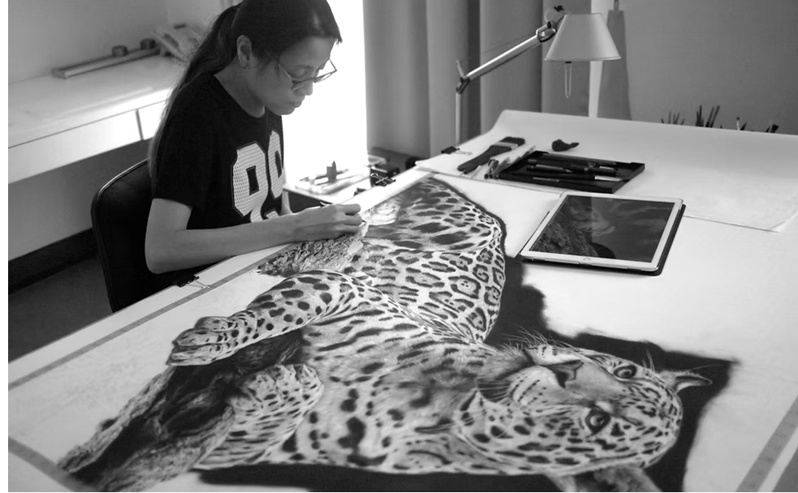
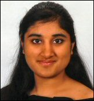
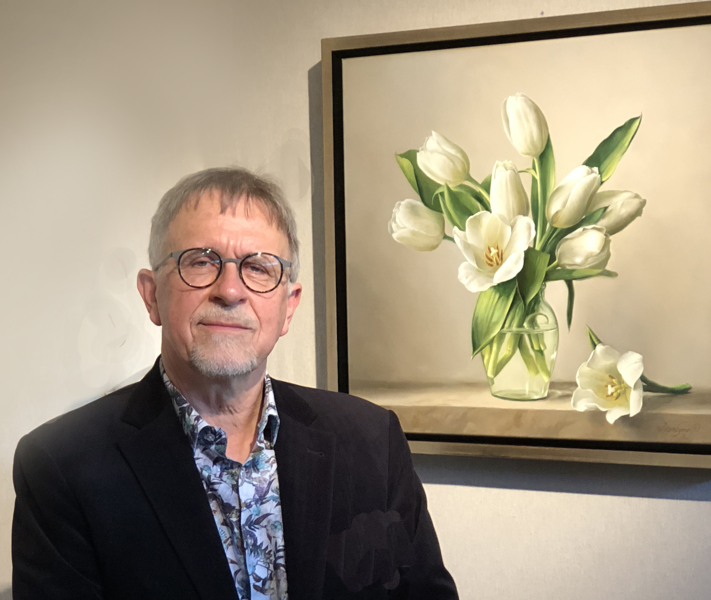
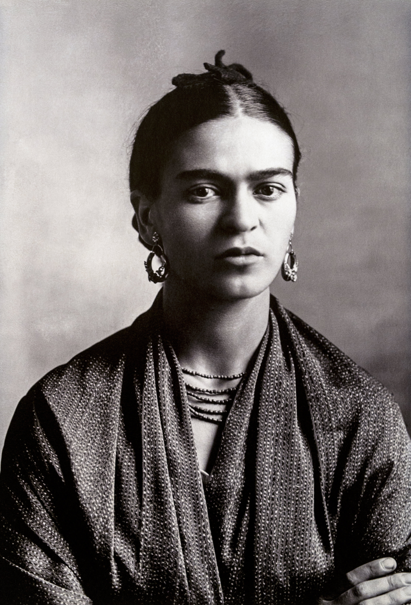

From storm photography to surrealism, you will find a little bit of everything here. Art has been part of my life for as long as I can remember. My desire to create is as strong as my need to breathe. Photography is another creative outlet for me. I enjoy chasing storms, and documenting surprises along the way. Ever since I was little, I dreamed of chasing storms. I never imagined it would become a reality. If there's something you dream of doing, give it a try. Sometimes amazing things happen as a result. Ally White joined Fine Art America on January 28th, 2014.
Malaysian artist, Monica Lee worked as a digital imaging artist for her father's advertising photography studio for 12 years. It wasn't until 2013 that she decided to pick up a pencil again, just for fun, quickly to realize that she still loved drawing. Quitting her job, she started her journey as a full-time artist. Growing up appreciating photography, made the concept of photorealism appealing to her. Specializing in graphite pencils and charcoal, she works from a photograph, recreating what she sees and further exaggerating or emphasizing the details in her drawings. Through her works, she aims to portray the beauty of her subject matter. Education: Diploma in 3D animation, The One Academy College, Malaysia.
Shivani Sud had an eventful year. After her big, fat South Asian wedding in December 2021, Shivani worked on completing her dissertation. In spring 2022, she enjoyed teaching her R1B course, Colonial Pasts, Decolonial Futures: South Asia in the Museum. She was excited to co-organize the panel “Imagined Geographies: (trans)regional visual practices in South and Southeast Asia” for the College Art Association’s annual conference and present her dissertation research at CAA’s conference as well as the 20th American Council of Southern Asian Art Symposium. Shivani is greatly looking forward to moving to Portland this summer, where she will begin a tenure-track post as Assistant Professor of Art History and the Humanities at Reed College.
"Pieter Wagemans" — a Belgian painter known for his realistic floral still-life paintings, especially roses. His works often highlight soft light, rich textures, and lifelike details, similar to what we see in Image 3 of the gallery (the hyper-realistic red rose)
Frida Kahlo was a Mexican artist known for her deeply personal and emotional paintings. She painted many self-portraits and used bold colors and symbols from Mexican culture. Her work often shows pain, strength, and identity.